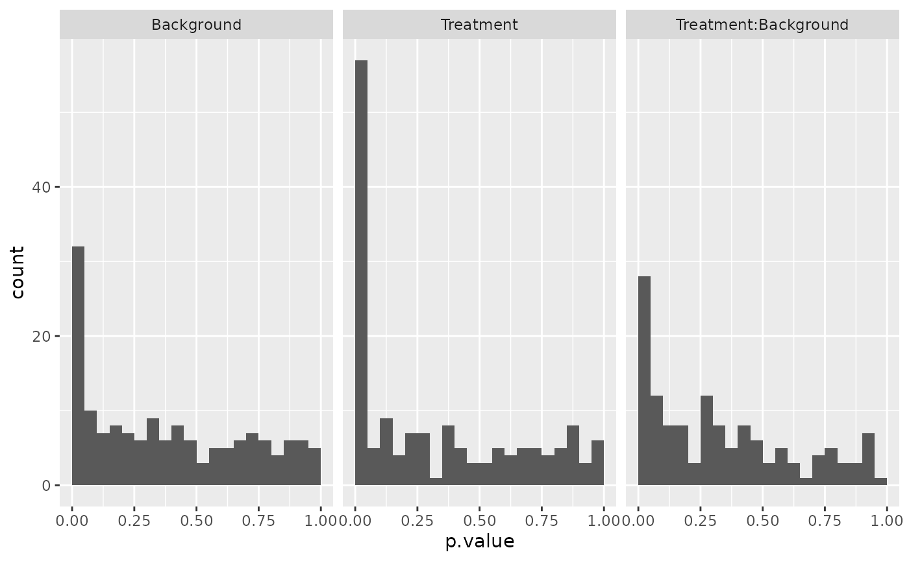
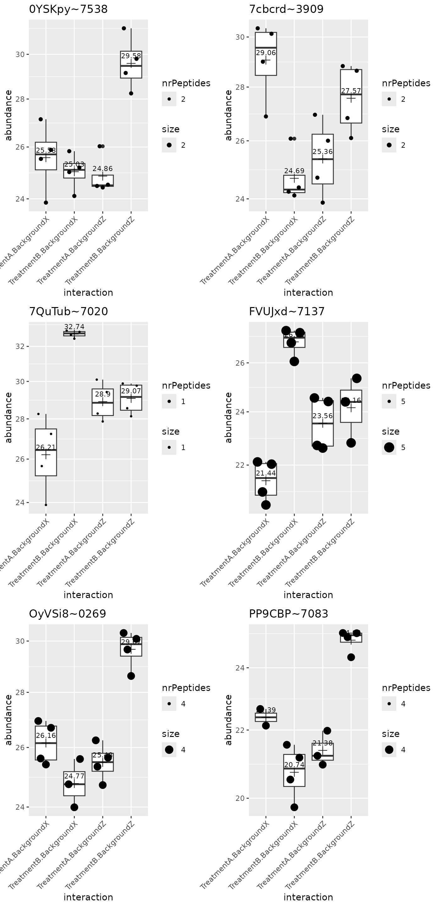
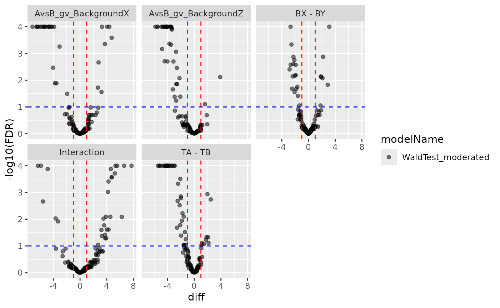
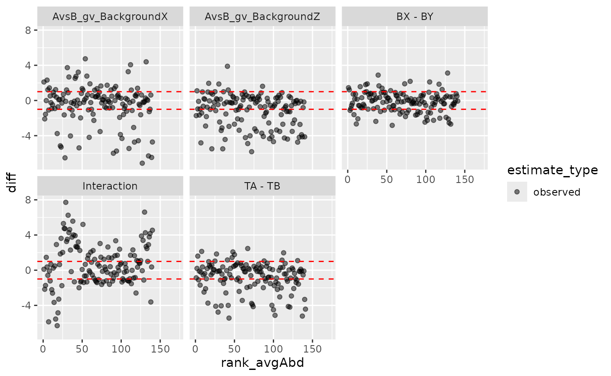
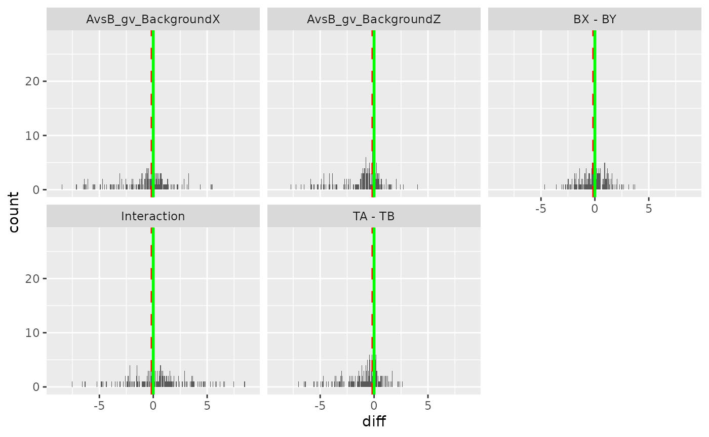
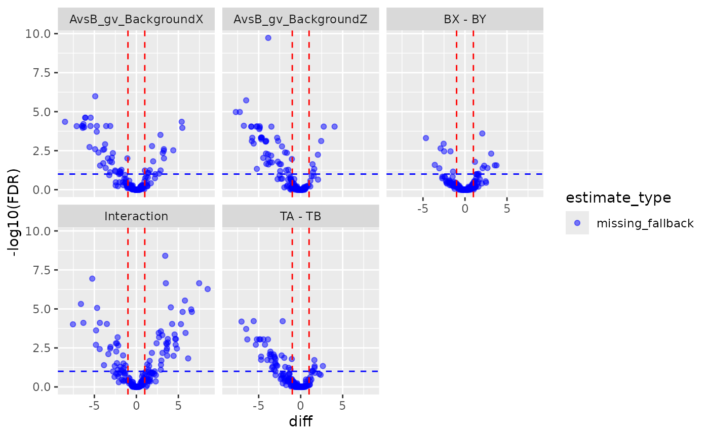
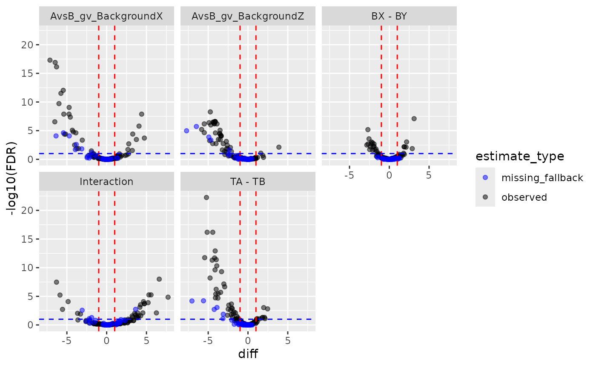
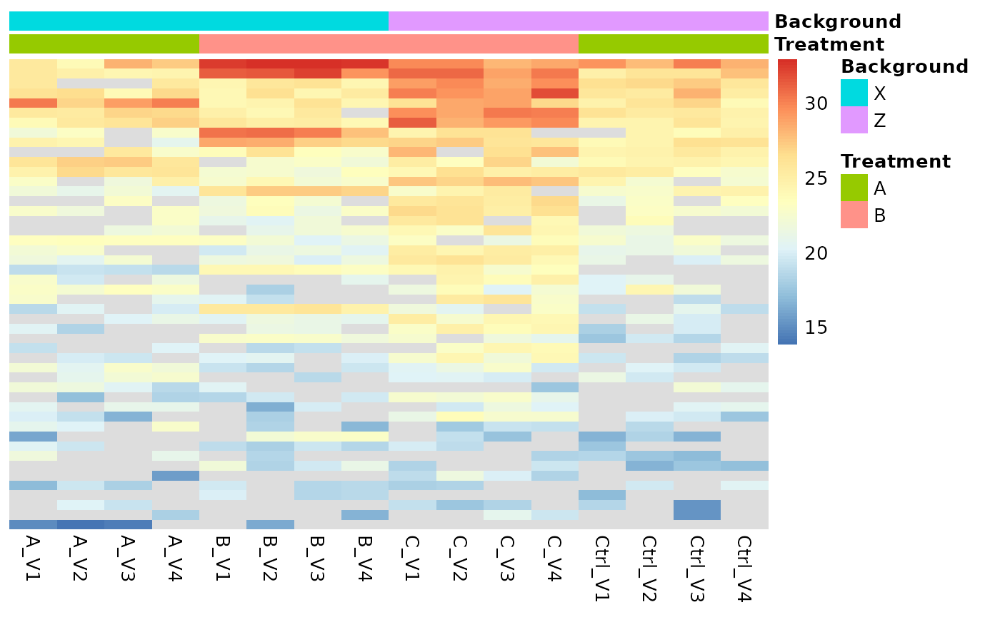
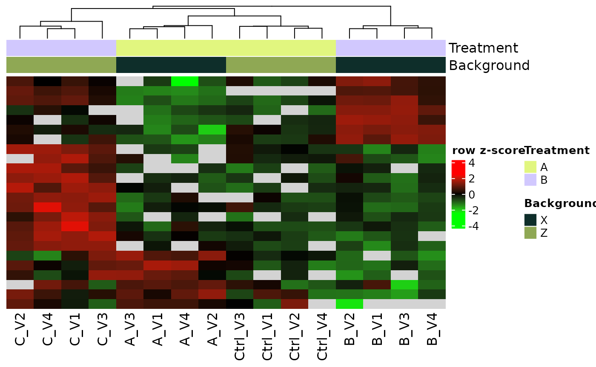

Modelling dataset with two Factors
Witold E. Wolski
2026-06-01
Source:vignettes/Modelling2Factors.Rmd
Modelling2Factors.RmdPurpose
In this tutorial, we delve into the concept of using multiple factors, also known as explanatory variables, to model the observed variance in your data. We will demonstrate this by modeling data with two factors and their interaction.
Examples of data where two explanatory variables are needed to explain the variance in the data are for instance: - Two cell lines (X) and (Z), for each of which we measured a control condition (A) and a treatment condition (B). - An experiment where samples from a control condition (A) and treatment condition (B) were measured in two batches, X and Y, and there is a batch effect we must account for. - A combination of treatments A and B results in factors such as FA with levels placeboA and A and FB with levels placeboB and B.
Let’s assume that the underlying dataset is generated in a course held annually. The context is that yeast is grown on glucose in one condition (A), and in the other condition (B), yeast is grown on glycerol and ethanol. Here, we are looking into the results of two different batches (X and Z), where other people performed the wet lab work, and even different LC-MS instruments were involved. It is, therefore, essential to model the batch variable for these two similar datasets.
We are also modeling the interaction between the two explanatory variables batch and condition for demonstration purposes. In this case, having a significant interaction term would mean the protein is expressed more in the Glucose condition in one batch. In contrast, the same protein is more abundant in the Ethanol condition in the other batch.
An in depth introduction to modelling and testing interactions using linear models can be found here.
Model Fitting
We use simulated data generated using the function
sim_lfq_data_2factor_config. Interesting here is the
definition of the model. If interaction shall be included in the model a
asterix should be used while if no interaction should be taken
into account a plus should be used in the model definition.
Also we can directly specify what comparisons we are interested in by
specifying the respective contrasts.
library(dplyr)
#data_Yeast2Factor <- prolfqua::prolfqua_data("data_Yeast2Factor")
data_2Factor <- prolfqua::sim_lfq_data_2factor_config(
Nprot = 200,
with_missing = TRUE,
weight_missing = 2)
data_2Factor <- prolfqua::LFQData$new(data_2Factor$data, data_2Factor$config)
pMerged <- data_2Factor
pMerged$factors()## # A tibble: 16 × 4
## sample sampleName Treatment Background
## <chr> <chr> <chr> <chr>
## 1 A_V1 A_V1 A X
## 2 A_V2 A_V2 A X
## 3 A_V3 A_V3 A X
## 4 A_V4 A_V4 A X
## 5 B_V1 B_V1 B X
## 6 B_V2 B_V2 B X
## 7 B_V3 B_V3 B X
## 8 B_V4 B_V4 B X
## 9 C_V1 C_V1 B Z
## 10 C_V2 C_V2 B Z
## 11 C_V3 C_V3 B Z
## 12 C_V4 C_V4 B Z
## 13 Ctrl_V1 Ctrl_V1 A Z
## 14 Ctrl_V2 Ctrl_V2 A Z
## 15 Ctrl_V3 Ctrl_V3 A Z
## 16 Ctrl_V4 Ctrl_V4 A Z
formula_Batches <-
prolfqua::strategy_lm("abundance ~ Treatment * Background ")
# specify model definition
contr_spec <- c("TA - TB" = "TreatmentA - TreatmentB",
"BX - BY" = "BackgroundX - BackgroundZ",
"AvsB_gv_BackgroundX" = "`TreatmentA:BackgroundX` - `TreatmentB:BackgroundX`",
"AvsB_gv_BackgroundZ" = "`TreatmentA:BackgroundZ` - `TreatmentB:BackgroundZ`",
"Interaction" = "AvsB_gv_BackgroundX - AvsB_gv_BackgroundZ")We are then building our model as we specified it before for each protein.
mod <- prolfqua::build_model(pMerged$data_long(), formula_Batches,
subject_id = pMerged$hierarchy_keys() )Now, we can visualize the effect of our factors that are specified in the model. This indicates in an elegant way what factors are the most important ones.
mod$anova_histogram()$plot
Distributions of all p-values from the ANOVA analysis.
ANOVA
To examine proteins with a significant interaction between the two
factors treatment and batch filtering for the factor
condition_:batch_.
ANOVA <- mod$get_anova()
ANOVA |> dplyr::filter(factor == "Treatment:Background") |> dplyr::arrange(FDR) |> head(5)## # A tibble: 5 × 10
## protein_Id factor Df Sum.Sq Mean.Sq F.value p.value isSingular nr_coef
## <chr> <chr> <int> <dbl> <dbl> <dbl> <dbl> <lgl> <int>
## 1 OyVSi8~0269 Treatment… 1 28.7 28.7 52.8 1.61e-5 FALSE 4
## 2 PP9CBP~7083 Treatment… 1 20.3 20.3 60.2 2.83e-5 FALSE 4
## 3 0YSKpy~7538 Treatment… 1 28.1 28.1 24.9 3.13e-4 FALSE 4
## 4 7cbcrd~3909 Treatment… 1 43.6 43.6 24.8 3.20e-4 FALSE 4
## 5 7QuTub~7020 Treatment… 1 39.8 39.8 29.0 1.65e-4 FALSE 4
## # ℹ 1 more variable: FDR <dbl>
protIntSig <- ANOVA |> dplyr::filter(factor == "Treatment:Background") |>
dplyr::filter(FDR < 0.01)
protInt <- pMerged$get_copy()
protInt$set_data(protInt$data_long()[protInt$data_long()$protein_Id %in% protIntSig$protein_Id[1:6],])These proteins can easily be visualized using the
boxplot function from the plotter objects in
prolfqua
gridExtra::grid.arrange(grobs = protInt$get_Plotter()$boxplots()$boxplot)
Proteins with FDR < 0.05 for the interaction in the factors condition and batch in an ANOVA.
Compute and analyse with the specified contrasts
Next, we want to calculate the statistical results for our group comparisons that have been specified in our contrast definition. Here we are using the moderated statistics which implements the concept of pooled variance for all proteins.
contr <- prolfqua::ContrastsModerated$new(prolfqua::Contrasts$new(mod, contr_spec))
contrdf <- contr$get_contrasts()These results can be visualized with e.g a volcano or a
MA plot.
plotter <- contr$get_Plotter()
plotter$volcano()$FDR
Volcano and MA plot for result visualisation
plotter$ma_plot()
Volcano and MA plot for result visualisation
Analyse contrasts with missing data imputation
Still using the approach above, we can only estimate group averages
in case there is at least one measurement for each protein in each
group/condition. In the case of missing data for one condition, we can
use the ContrastsMissing function where the 10th percentile
expression of all proteins is used for the estimate of the missing
condition.
contrSimple <- prolfqua::ContrastsMissing$new(pMerged, contr_spec)
contrdfSimple <- contrSimple$get_contrasts()
pl <- contrSimple$get_Plotter()
pl$histogram_diff()
Volcano and MA plot for result visualisation for the group average model
pl$volcano()$FDR
Volcano and MA plot for result visualisation for the group average model
Merge nonimputed and imputed data.
For the moderated model, we can only get results if we have enough
valid data points. With the group average model we can get group
estimates for all proteins. Therefore, we are merging the statistics for
both approaches while we are preferring the values of the moderated
model. Also these results can again be visualized in a
volcano plot.
dim(contr$get_contrasts())## [1] 757 13
dim(contrSimple$get_contrasts())## [1] 980 20
mergedContrasts <- prolfqua::merge_contrasts_results(prefer = contr, add = contrSimple)$merged
cM <- mergedContrasts$get_Plotter()
plot <- cM$volcano()
plot$FDR
Volcano plot of moderated (black) and impuation (light green) model
Look at Proteins with significant interaction term.
sigInteraction <- mergedContrasts$contrast_result |>
dplyr::filter(contrast == "Interaction" & FDR < 0.2)
protInt <- pMerged$get_copy()
protInt$set_data(protInt$data_long()[protInt$data_long()$protein_Id %in% sigInteraction$protein_Id,])
protInt$get_Plotter()$raster()
Heatmap for proteins that show a FDR < 0.2 for the contrast interaction.
hm <- protInt$get_Plotter()$heatmap()
hm
Proteinheatmap for proteins with significant Interactions
Alternative model specification
We compute the same contrasts as above but using only one factor and subgroups “A_X”, “A_Z”, “B_X”, “B_Z”.
We start by simulating the data.
data_1Factor <- prolfqua::sim_lfq_data_2factor_config(
Nprot = 200,
with_missing = TRUE,
weight_missing = 2, TWO = FALSE)
data_1Factor <- prolfqua::LFQData$new(data_1Factor$data, data_1Factor$config)
data_1Factor$response()## [1] "abundance"Instead of two factors we now have one factor Group with
four levels 4, 4, 4, 4.
knitr::kable(data_1Factor$factors())| sample | sampleName | Group |
|---|---|---|
| A_V1 | A_V1 | A_X |
| A_V2 | A_V2 | A_X |
| A_V3 | A_V3 | A_X |
| A_V4 | A_V4 | A_X |
| B_V1 | B_V1 | B_X |
| B_V2 | B_V2 | B_X |
| B_V3 | B_V3 | B_X |
| B_V4 | B_V4 | B_X |
| C_V1 | C_V1 | B_Z |
| C_V2 | C_V2 | B_Z |
| C_V3 | C_V3 | B_Z |
| C_V4 | C_V4 | B_Z |
| Ctrl_V1 | Ctrl_V1 | A_Z |
| Ctrl_V2 | Ctrl_V2 | A_Z |
| Ctrl_V3 | Ctrl_V3 | A_Z |
| Ctrl_V4 | Ctrl_V4 | A_Z |
We specify the model formula and the same contrasts as for the two factor model but using only one factor and the subgroups.
formula_Batches <-
prolfqua::strategy_lm("abundance ~ Group")
# specify model definition
contr_spec <- c("TA - TB" = "(GroupA_X + GroupA_Z)/2 - (GroupB_X + GroupB_Z)/2",
"BX - BY" = "(GroupA_X + GroupB_X)/2 - (GroupA_Z + GroupB_Z)/2",
"AvsB_gv_BackgroundX" = "GroupA_X - GroupB_X",
"AvsB_gv_BackgroundZ" = "GroupA_Z - GroupB_Z",
"Interaction" = "AvsB_gv_BackgroundX - AvsB_gv_BackgroundZ")
mod <- prolfqua::build_model(data_1Factor$data_long(), formula_Batches,
subject_id = pMerged$hierarchy_keys() )
contr <- prolfqua::ContrastsModerated$new(prolfqua::Contrasts$new(mod, contr_spec))
contrdfONE <- contr$get_contrasts()We now compare the contrasts computed from the model with two factors with those obtained from the model with one factor. We can see that the contrast estimates for difference, t-statistics, p.value and FDR are the same.
Likelihood ratio Test for models with more factors
In cases where you have more then one factor possibly explaining the
variance in your data, you can use the likelihood ratio test, to examine
which factor to include into the statistical model. For more details see
the LR_test function documentation and example code. (To
open the documentation run ?LR_test in the R console.)
Session Info
## R version 4.5.2 (2025-10-31)
## Platform: x86_64-pc-linux-gnu
## Running under: Ubuntu 24.04.4 LTS
##
## Matrix products: default
## BLAS: /usr/lib/x86_64-linux-gnu/openblas-pthread/libblas.so.3
## LAPACK: /usr/lib/x86_64-linux-gnu/openblas-pthread/libopenblasp-r0.3.26.so; LAPACK version 3.12.0
##
## locale:
## [1] LC_CTYPE=C.UTF-8 LC_NUMERIC=C LC_TIME=C.UTF-8
## [4] LC_COLLATE=C.UTF-8 LC_MONETARY=C.UTF-8 LC_MESSAGES=C.UTF-8
## [7] LC_PAPER=C.UTF-8 LC_NAME=C LC_ADDRESS=C
## [10] LC_TELEPHONE=C LC_MEASUREMENT=C.UTF-8 LC_IDENTIFICATION=C
##
## time zone: UTC
## tzcode source: system (glibc)
##
## attached base packages:
## [1] stats graphics grDevices utils datasets methods base
##
## other attached packages:
## [1] dplyr_1.2.1 prolfqua_1.6.2
##
## loaded via a namespace (and not attached):
## [1] tidyselect_1.2.1 viridisLite_0.4.3 vipor_0.4.7
## [4] farver_2.1.2 S7_0.2.2 fastmap_1.2.0
## [7] lazyeval_0.2.3 digest_0.6.39 rpart_4.1.24
## [10] lifecycle_1.0.5 survival_3.8-3 statmod_1.5.2
## [13] magrittr_2.0.5 compiler_4.5.2 progress_1.2.3
## [16] rlang_1.2.0 sass_0.4.10 tools_4.5.2
## [19] utf8_1.2.6 yaml_2.3.12 data.table_1.18.4
## [22] knitr_1.51 labeling_0.4.3 prettyunits_1.2.0
## [25] htmlwidgets_1.6.4 plyr_1.8.9 RColorBrewer_1.1-3
## [28] withr_3.0.2 purrr_1.2.2 desc_1.4.3
## [31] nnet_7.3-20 grid_4.5.2 jomo_2.7-6
## [34] mice_3.19.0 ggplot2_4.0.3 scales_1.4.0
## [37] iterators_1.0.14 MASS_7.3-65 cli_3.6.6
## [40] crayon_1.5.3 UpSetR_1.4.1 rmarkdown_2.31
## [43] ragg_1.5.2 reformulas_0.4.4 generics_0.1.4
## [46] otel_0.2.0 httr_1.4.8 ggbeeswarm_0.7.3
## [49] minqa_1.2.8 cachem_1.1.0 operator.tools_1.6.3.1
## [52] splines_4.5.2 vctrs_0.7.3 boot_1.3-32
## [55] glmnet_5.0 Matrix_1.7-4 jsonlite_2.0.0
## [58] hms_1.1.4 mitml_0.4-5 ggrepel_0.9.8
## [61] beeswarm_0.4.0 systemfonts_1.3.2 foreach_1.5.2
## [64] limma_3.66.0 plotly_4.12.0 tidyr_1.3.2
## [67] jquerylib_0.1.4 glue_1.8.1 pkgdown_2.2.0
## [70] nloptr_2.2.1 pan_1.9 codetools_0.2-20
## [73] stringi_1.8.7 shape_1.4.6.1 gtable_0.3.6
## [76] lme4_2.0-1 tibble_3.3.1 pillar_1.11.1
## [79] htmltools_0.5.9 R6_2.6.1 textshaping_1.0.5
## [82] Rdpack_2.6.6 formula.tools_1.7.1 evaluate_1.0.5
## [85] lattice_0.22-7 rbibutils_2.4.1 backports_1.5.1
## [88] pheatmap_1.0.13 broom_1.0.13 bslib_0.11.0
## [91] Rcpp_1.1.1-1.1 gridExtra_2.3 nlme_3.1-168
## [94] mgcv_1.9-3 logistf_1.26.1 xfun_0.57
## [97] fs_2.1.0 forcats_1.0.1 pkgconfig_2.0.3